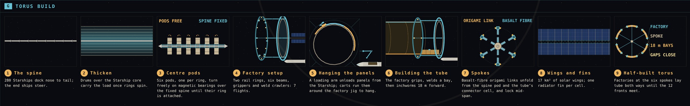
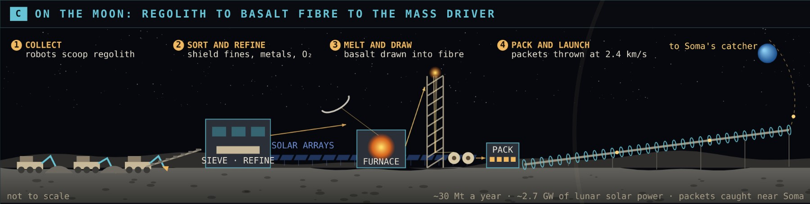
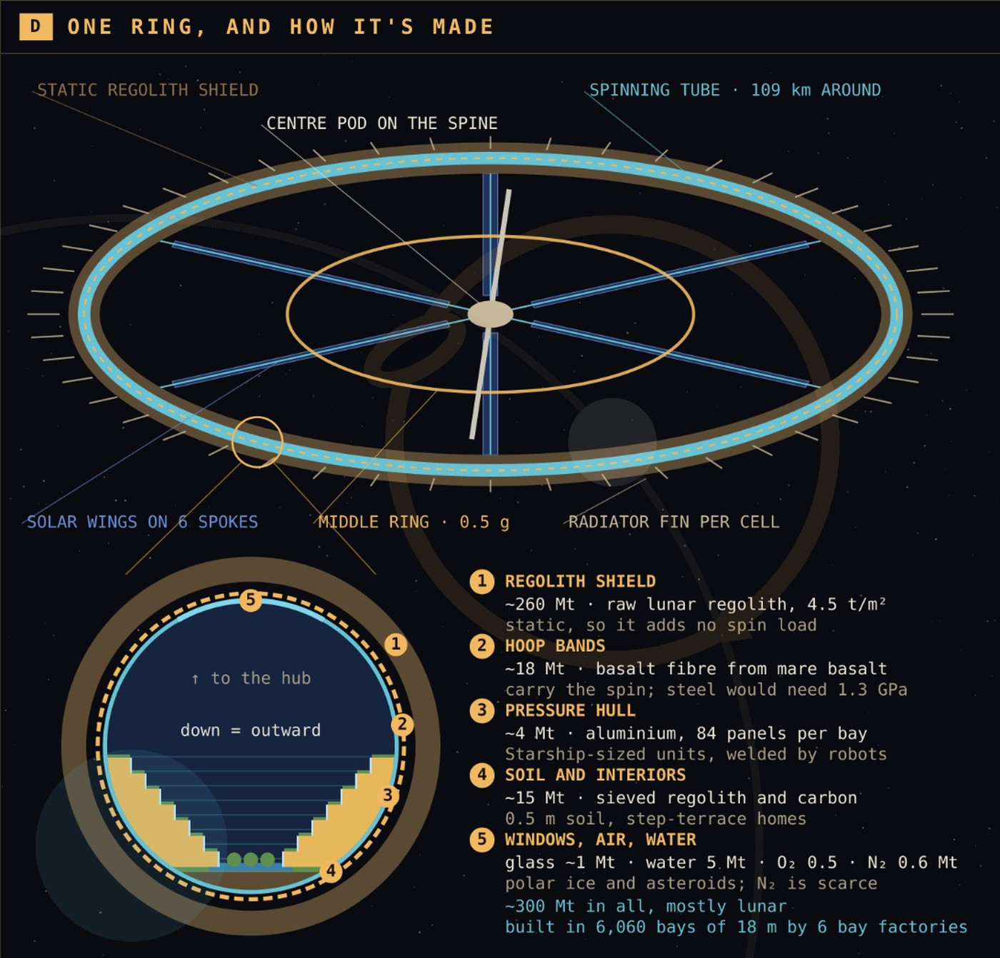
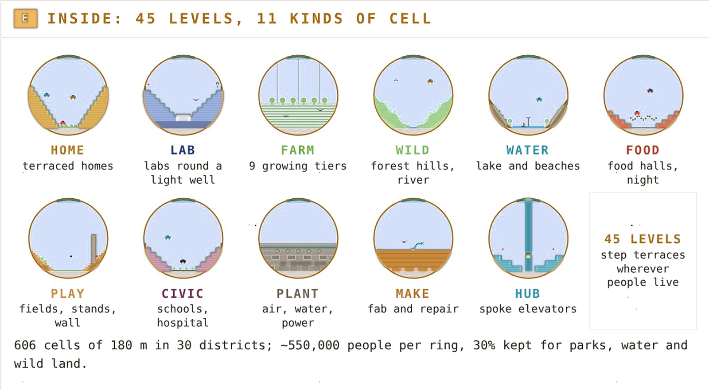
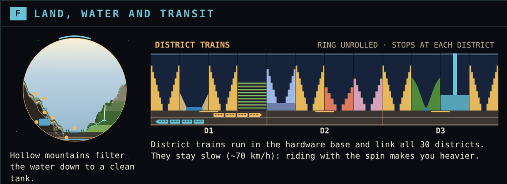
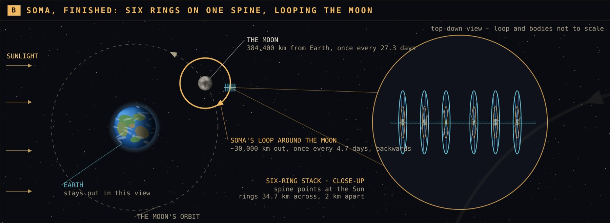

Summary
Six rings, each 109 km around, on one shared spine: about 3.3 million people, parked in a stable loop around the Moon.
Each ring is built mostly from lunar material by self-assembling bay factories, at an estimated $87k–661k of build cost per resident. All figures are order-of-magnitude estimates for a concept, not engineering results.
How Soma is built
The construction film, 5 min 57 s: the spine, the bay factory, the tube, spokes, wings and radiators, the ring stack, and the zoom out to the orbit. Download the MP4
- The spine. Cargo Starships unload, then dock nose to tail along the spin axis; the ships at each end keep their engines to steer.
- Thicken. Concentric drums are wrapped over the Starship core so it can carry Sun-tracking loads once the rings spin.
- Centre pods. Six pods are built over the fixed spine one by one. They turn freely on magnetic bearings; real spin waits until the ring is attached.
- Factory setup. Seven Starship flights bring two rail rings, six beams, grippers and weld crawlers for each bay factory.
- Hanging the panels. A loading arm unloads hull panels from a Starship; carts run them around the factory jig to hang.
- Building the tube. The factory grips the tube, welds and leak-tests one 18 m bay, then inchworms forward.
- Spokes. Origami links of basalt fibre unfold from the pod and the tube's connector cell and lock mid-span, in balanced pairs.
- Wings and fins. Wing robots unroll 17 km² of lunar-made solar cells along the spokes; carriers fit one radiator fin per cell.
- Half-built torus to full ring. Six factories build tube both ways from the spokes; the 12 fronts meet after 6,060 bays and the ring closes.


The design
Each ring is a 150 m-wide tube bent into a 17.35 km-radius torus that spins at 0.23 rpm for 1 g at the floor.

- Tube and shield. Basalt-fibre hoop bands carry the spin; steel would need 1.3 GPa and is too heavy. A static regolith shell (~260 Mt) shields against radiation.
- Cells. 606 cells of 180 m in 30 districts, 45 levels each, of 11 types.
- Step terraces. Every cell where people live or work steps back from a central canyon, so each level has open sky.
- Spine. 280 Starships docked into a 14 km core, wrapped in five concentric drums (~1.4 Mt).
- Spokes. Spin pulls ~0.23 GPa on a spoke; basalt fibre holds ~1.5 GPa.
- Stack. Three counter-rotating pairs, 2 km apart: no net spin, steered like a gyroscope to face the Sun.
- Power and heat. ~6 GW from wings on the spokes; ~650 radiator fins shed heat edge-on.
- Transit. District trains run through the hardware base at ~70 km/h.


Orbit
Soma sits in a lunar distant retrograde orbit about 30,000 km from the Moon, looping it backwards every 4.7 days while the Moon carries it around Earth. In a simplified Earth–Moon–Sun model it stayed bound for 20 years with no corrections, even with a 2 m/s kick each time a ring was added. The Soma logo is drawn from this orbit.

Cost per resident
Build cost per resident falls from $168k–661k for ring 1 to $87k–502k for ring 100, as later rings reuse the lunar industry and factories and Earth-made parts get cheaper. A standalone ring costs about $89–356B; 100 rings total about $5.2T to $28.7T.
Key numbers
| Ring | 109 km around, 17.35 km radius, 1 g at 0.23 rpm |
|---|---|
| Tube | 150 m across, 45 levels of 3.33 m, 606 cells of 180 m |
| Population | ~550,000 per ring; ~3.3 million per six-ring stack |
| Atmosphere | 57 kPa, 34% O₂ |
| Mass per ring | ~300 Mt, mostly lunar regolith |
| Spine | 280 Starships (14 km core) + 5 drums to r 100 m, ~1.4 Mt |
| Middle ring | r 8.7 km, 0.5 g, Ø 40 m |
| Stack | 6 rings, 3 counter-rotating pairs, 2 km apart |
| Power | ~6 GW per ring from spoke wings |
| Orbit | Lunar DRO, ~30,000 km, 4.7-day loop |
More
- Paper: Soma: CisLunar Rings (15 pages: materials and cost by cell, lunar base, Starship launches) · LaTeX source
- Poster, 60 × 36 in print PDF
- Report: cost, deployment and operations (36 pages)
- Source, videos and render scripts on GitHub
Order-of-magnitude estimates · speculative design study · illustrations not to scale.